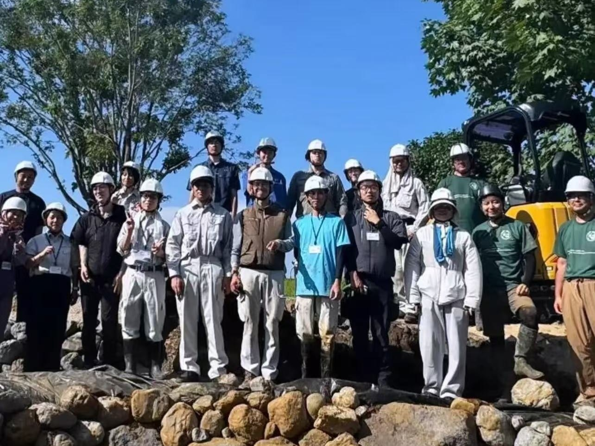
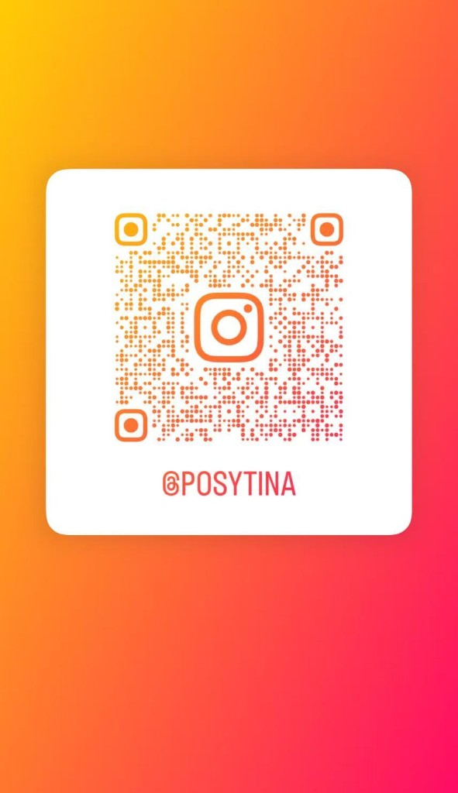
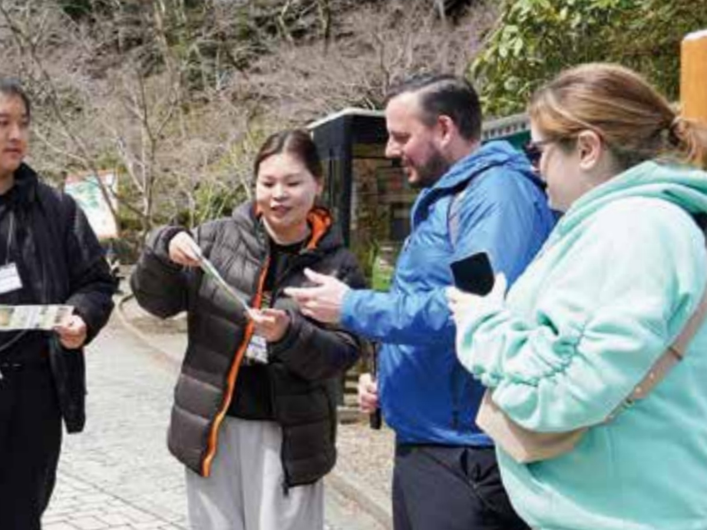
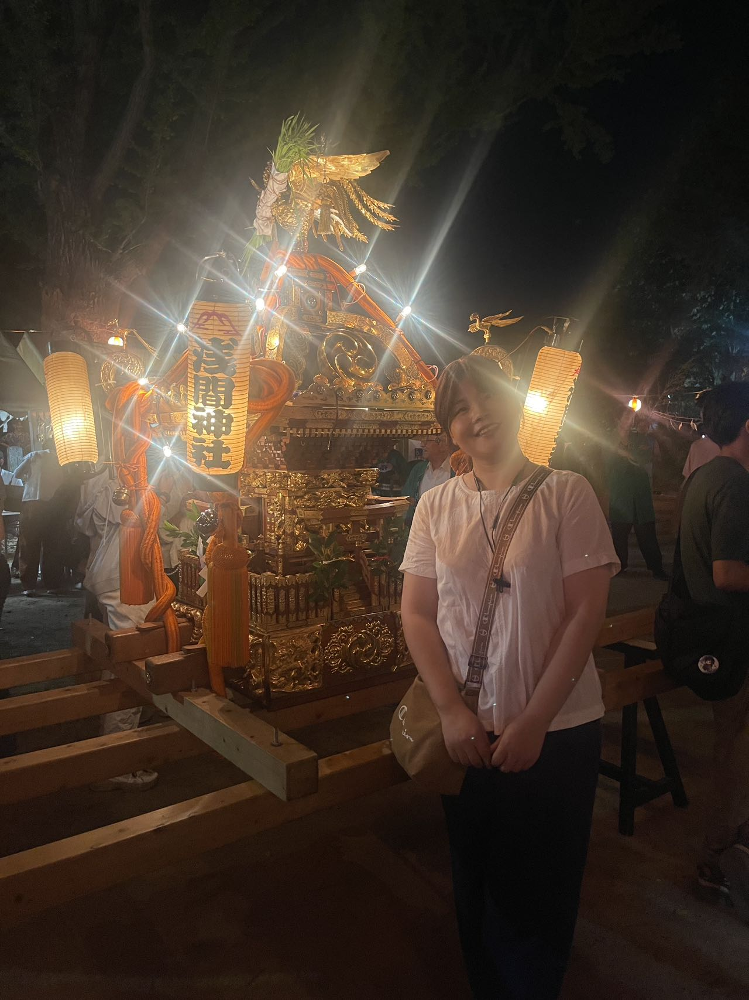
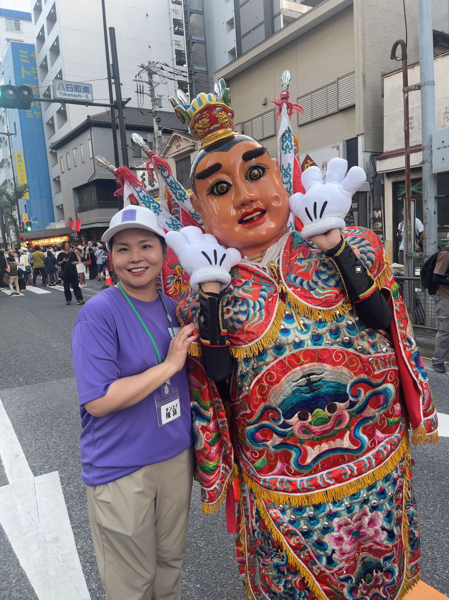
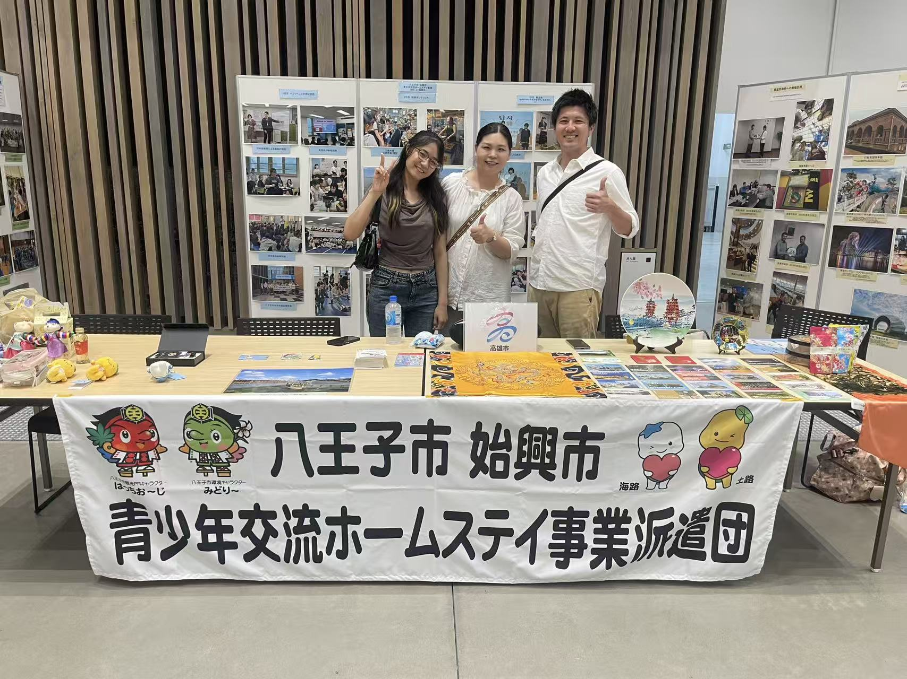
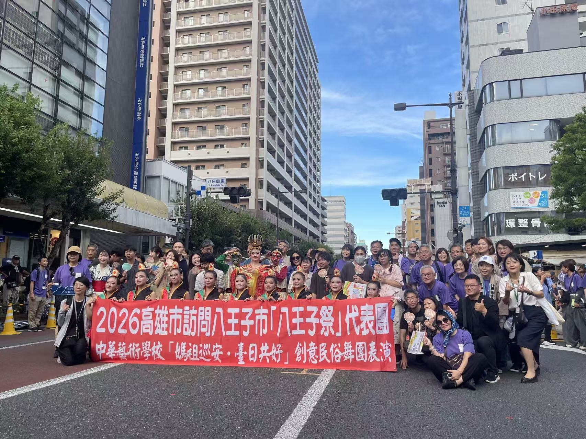

学校プロジェクト · 2027横浜花博

2027年横浜国際園芸博覧会「花鏡（HANAKAGAMI）」出展準備
2026年〜2027年 · 高橋真弓先生チーム · 日本工学院八王子 土木造園科
GREEN×EXPO 2027 への屋外出展（約150㎡）に向け、企画・資料整理・施工準備・広報記録に参加しています。2026年7月の大林道路見学会で花博工事現場（掘削段階）を視察し、8月23日から校内・会場での準備作業（割竹・石組・麦干し小屋など）に取り組みます。
- 出展テーマ：「日本人の心の原風景 ～万国共通の感覚を求めて～」
- 施工管理サポート（名簿 No.8）· 安全管理 · 活动记录 · 摄影
- 8/23–25 広報代行 · Instagram で出展準備を発信
- 造園 × 土木の現場協働 · チーム連携 · 報連相
写真：2026年8月 横浜会場 · 石組準備 · チーム集合

ボランティア活動

高尾山観光案内ボランティア
2025年4月頃
高尾山での観光案内ボランティア。英語で登山道を案内するなど、来客対応とチーム連携を経験しました。
本活動は、八王子市の広報紙『広報はちおうじ』2025年4月15日号に掲載されました。
- 簡単な英語で、外国人観光客へ登山道を案内
- ボランティアチーム内の連携
- 地域への貢献 · 接客経験
- 市広報への掲載（公的な活動記録）

八王子まつり · 神輿担ぎボランティア
2025年7月
地域のお祭りに参加。神輿担ぎを通じて、地域コミュニティとの関わりを深めました。
- 地域祭りへの参加 · チームワーク
- 日本の地域文化への理解

台湾・高雄市学生受入れボランティア
2025年8月
台湾・高雄市からの学生受入れに関するボランティア。国際交流・異文化コミュニケーションの経験。
- 国際交流 · 異文化理解
- ボランティア精神 · イベント支援
- 相手の話を聞き、分かりやすく伝える練習

第七回 多文化共生 平和写真展 ボランティア
2026年8月2日（日）8:30〜14:15 · 参加済み
東京たま未来メッセ（八王子市）で開催された平和・多文化共生写真展のボランティア。展示設営（写真掲示）の支援、やさしい日本語ブースでのコミュニケーション活動、多国籍のボランティアとの協働を経験しました。
- 展示設営 · やさしい日本語ブース（口述を聞き取り図を描く）
- 多文化共生 · 八王子市後援イベントへの地域貢献
- ミャンマー出身者や中国（湖北・マカオなど）のボランティアとのチーム連携
- 八王子まつり（2025）からの継続的なボランティアネットワーク

八王子まつり · 台湾・高雄パフォーマンス団受入れボランティア
2026年8月7日（木）〜9日（土）· 3日間 · 参加済み
八王子まつり期間中、姉妹都市・台湾高雄市から来訪したパフォーマンス団（中華芸術学校）の受入れ支援ボランティア。3日間、高尾山での案内、引率・移動、中国語⇔日本語の通訳、会場設営などを担当しました。2025年の学生受入れに続く、八王子市「助っ人留学生」としての国際交流活動です。
- 8/7 高尾山観光案内 · 引率 · 通訳
- 中国語⇔日本語の通訳 · 移動・会場設営のサポート
- パフォーマンス団の引率 · 昼食・夕食の同行
- 姉妹都市交流 · 2025年からの継続ボランティア
現場写真：高尾山・祭典・交流（2026/8/7–9）
面接で話せるポイント
- 高尾山案内 — 簡単な英語で登山道案内／『広報はちおうじ』2025年4月15日号に掲載
- 祭りボランティア — 地域貢献、八王子での生活と関わり
- 台湾交流（2025）— 異文化コミュニケーション、多言語環境での調整
- 花鏡・横浜花博（2027出展準備）— 造園現場・施工管理サポート · 広報（@posytina）· チーム協働
- 平和写真展（2026/8/2）— 設営支援・やさしい日本語ブース（口述→描画）・多国籍ボランティア協働
- 台湾・高雄パフォーマンス団（2026/8/7–9 · 3日間参加済）— 高尾山案内・中日通訳、引率・会場サポート、姉妹都市交流の継続